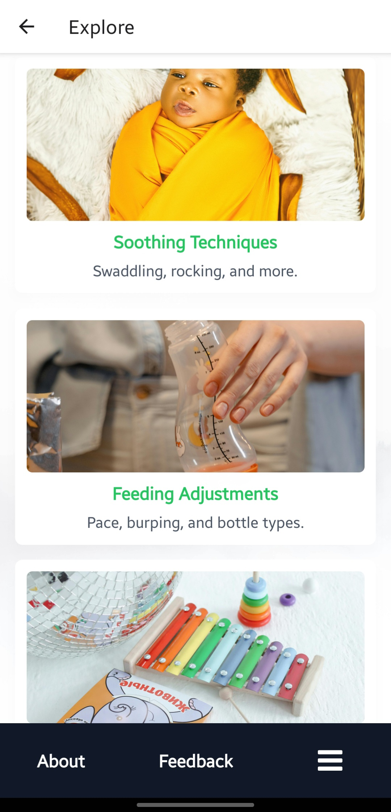

Kozy Baby App
A React Native app to help parents manage colic effortlessly, featuring categorized remedies, user reviews, and ratings. Built for iOS and Android, it’s being published on the Play Store and App Store. Includes Expo Analytics to track performance while ensuring user privacy.
Facebook AI Model Translator
A web app using PyTorch, Transformers, and HuggingFace Pipelines supports 200+ languages for seamless translation. With a Flask backend and Bootstrap frontend, it offers dynamic language selection, loading animations, and responsive design. Perfect for personal and enterprise use.